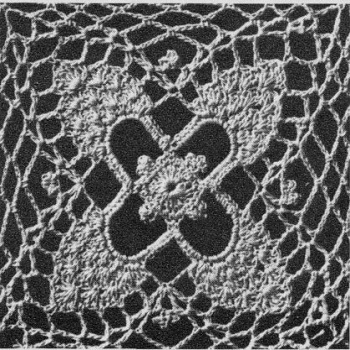

Festive Pineapple Tablecloth Pattern
MATERIALS:
J. & P. COATS BIG BALL BEST SIX CORD MERCERIZED CROCHET, Art. A. 104, Size 30: 44 balls of White, Ecru, or No. 42 Cream;
or
CLARK'S BIG BALL MERCERIZED CROCHET, Art. B. 34, Size 30: 32 balls of White, No. 61 Ecru, or No. 42 Cream;
or
CLARK'S BIG BALL MERCERIZED CROCHET, Art. B. 345, Size 30: 19 balls of White or Ecru only.
Milwards Steel Crochet Hook No. 10.
Tablecloth measures 60 x 80 inches.
Each motif measures 3 1/4 inches square.
FIRST MOTIF Starting at center, ch 6. Join with sl st to form ring.
1st Rnd: Ch 3, 19 dc in ring. Join to top of ch-3 (20 dc, counting ch-3 as 1 dc).
2nd Rnd: Ch 1, sc in same place as sl st and in next 2 dc, * ch 5, sl st in 4th ch from hook, (ch 3, sl st in same place as last sl st) twice (triple picot made); ch 1, sc in same place as last sc was made and in next 5 dc. Repeat from * around, ending with sc in last 2 dc. Join to first sc.
3rd Rnd: Ch 1, sc in same place as sl st, * ch 17, skip the triple picot and the next 2 sc; sc in next 2 sc. Repeat from * around, ending with sc in last sc. Join as before.
4th Rnd: Sl st in next loop, ch 1, make 23 sc in each loop around. Join.
5th Rnd: Sl st in next 7 sc, ch 1, sc in same place as last sl st, * (3 dc in next sc, sc in next sc - shell made) 5 times; ch 7, skip next 12 sc, sc in next sc. Repeat from * around, ending with ch 7. Join (start of 4 pineapples).
6th Rnd: Sl st in next 2 dc, ch 1, sc in same place as last sl st, * (shell in next sc, sc in center of next shell) 4 times; ch 2, in center ch of next loop make dc, ch 2 and dc (V st made); make a triple picot; V st in same place as last V st was made; ch 2, sc in center of next shell. Repeat from * around, ending with ch 2. Join.
7th Rnd: Sl st in 2 dc, ch 1, sc in same place, * (shell in next sc, sc in next shell) 3 times; ch 2, V st in next V-st sp (V st over V st made), ch 9, V st over V st, ch 2, sc in center of next shell. Repeat from * around, ending with ch 2. Join.
8th Rnd: Sl st in 2 dc, ch 1, sc in same place, * (shell in next sc, sc in center of next shell) twice; ch 2, V st over V st, ch 7, sc in loop, ch 7, V st over V st, ch 2, sc in center of next shell. Repeat from * around, ending with ch 2. Join and break off.
To Shape Corner:
1st row: Attach thread in V st preceding any pineapple, ch 5, dc in same place (starting V st over V st made), ch 2, sc in center of next shell, in next sc make dc, 3 tr and dc; sc in center of next shell, ch 2, V st over V st. Ch 1, turn.
2nd row: Sl st in sp, starting V st over V st, ch 2, sc in center tr of shell, ch 2, V st over V st. Ch 1, turn.
3rd row: (V st over V st) twice. Break off. Complete remaining corners in same way.
Last Rnd: With right side facing, attach thread in first V st of any 2 V-st group, ch 1, sc in same place, * ch 7, sc in next V st (corner made); (ch 5, sc in next V st) twice; (ch 7, sc in next ch-7 loop) twice; ch 7, sc in next V st, (ch 5, sc in next V st) twice. Repeat from * around, ending with ch 5. Join and break off.
SECOND MOTIF Work as for First Motif until corner shaping has been completed.
Last Rnd: With right side facing, attach thread in first V st of any 2 V-st group, ch 1, sc in same place, ch 3, sl st in any corner loop on First Motif, ch 3, sc in next V st on Second Motif, (ch 2. sl st in next loop on First Motif, ch 2, sc in next V st on Second Motif) twice; (ch 3, sl st in next loop on First Motif, ch 3, sc in next ch-7 loop on Second Motif) twice; ch 3, sl st in next loop on First Motif, ch 3, sc in next V st on Second Motif; (ch 2, sl st in next loop on First Motif, ch 2, sc in next V st on Second Motif) twice; ch 3, sl st in corner loop on First Motif, ch 3, sc in next V st on Second Motif and complete rnd as for First Motif (no more joinings). Make 18 rows of 24 motifs, joining adjacent sides as Second Motif was
joined to First Motif (where 4 corners meet, join corners to previous joinings).
EDGING
1st Rnd: With right side facing, attach thread in the 8th loop preceding any corner loop, ch 1, sc in same place, * ch 9, sc in next loop. Repeat from * around, ending with ch 5, tr in first sc.
2nd Rnd: * Ch 9, sc in next loop. Repeat from * around, ending with tr in tr.
3rd Rnd: (Ch 9, sc in next loop) 4 times; ** ch 5, in center ch of next loop make 5 tr, ch 5, sl st in last tr made and 4 tr (shell made); ch 5, sc in next loop, (ch 9, sc in next loop) twice; ch 5, shell in center ch of corner loop, ch 5, sc in next loop, (ch 9, sc in next loop) twice; * ch 5, shell in center ch of next loop, ch 5, sc in next loop, (ch 9, sc in next loop) 7 times. Repeat from * across to within center loop of last motif at next corner. Repeat from ** around, ending with ch 9, sl st in tr. Break off.

HOME